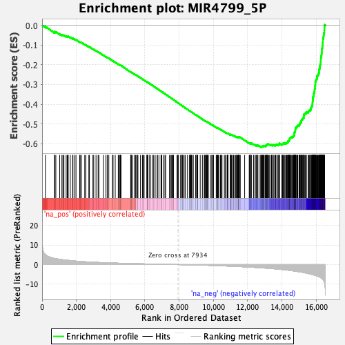
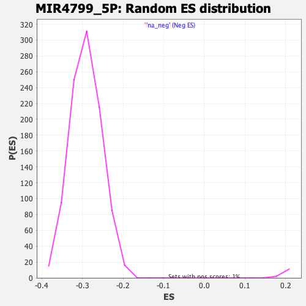

| | | Dataset | DE_genes2 |
| Phenotype | NoPhenotypeAvailable |
| Upregulated in class | na_neg |
| GeneSet | MIR4799_5P |
| Enrichment Score (ES) | -0.6172439 |
| Normalized Enrichment Score (NES) | -2.1230092 |
| Nominal p-value | 0.0 |
| FDR q-value | 0.0 |
| FWER p-Value | 0.0 |
Table: GSEA Results Summary

Fig 1: Enrichment plot: MIR4799_5P
Profile of the Running ES Score & Positions of GeneSet Members on the Rank Ordered List
| PROBE | GENE SYMBOL | GENE_TITLE | RANK IN GENE LIST | RANK METRIC SCORE | RUNNING ES | CORE ENRICHMENT | | 1 | RHOA | | | 194 | 5.113 | -0.0062 | No |
| 2 | BTG1 | | | 729 | 3.153 | -0.0357 | No |
| 3 | DDO | | | 732 | 3.139 | -0.0322 | No |
| 4 | VDAC2 | | | 802 | 3.048 | -0.0331 | No |
| 5 | PEX5L | | | 1028 | 2.701 | -0.0439 | No |
| 6 | SGK1 | | | 1157 | 2.530 | -0.0490 | No |
| 7 | ALDH1A3 | | | 1216 | 2.449 | -0.0498 | No |
| 8 | FAM114A1 | | | 1274 | 2.382 | -0.0506 | No |
| 9 | GNAS | | | 1405 | 2.265 | -0.0561 | No |
| 10 | GBP1 | | | 1468 | 2.209 | -0.0574 | No |
| 11 | P2RY6 | | | 1497 | 2.179 | -0.0567 | No |
| 12 | ZBTB4 | | | 1525 | 2.156 | -0.0559 | No |
| 13 | ZFP42 | | | 1644 | 2.046 | -0.0609 | No |
| 14 | FAT1 | | | 1782 | 1.934 | -0.0672 | No |
| 15 | SYNM | | | 1801 | 1.917 | -0.0661 | No |
| 16 | FBXL18 | | | 1905 | 1.837 | -0.0704 | No |
| 17 | VNN1 | | | 1979 | 1.768 | -0.0729 | No |
| 18 | TMCC1 | | | 2195 | 1.623 | -0.0844 | No |
| 19 | GGACT | | | 2250 | 1.589 | -0.0859 | No |
| 20 | BAHD1 | | | 2287 | 1.570 | -0.0864 | No |
| 21 | IQCE | | | 2490 | 1.448 | -0.0972 | No |
| 22 | SMPD3 | | | 2554 | 1.412 | -0.0995 | No |
| 23 | SKI | | | 2729 | 1.318 | -0.1088 | No |
| 24 | R3HDM4 | | | 2762 | 1.305 | -0.1093 | No |
| 25 | CASP10 | | | 2967 | 1.210 | -0.1206 | No |
| 26 | KDM6A | | | 3014 | 1.190 | -0.1221 | No |
| 27 | TNFSF11 | | | 3148 | 1.133 | -0.1290 | No |
| 28 | MCIDAS | | | 3270 | 1.085 | -0.1353 | No |
| 29 | MMP1 | | | 3316 | 1.070 | -0.1368 | No |
| 30 | CTBP1 | | | 3572 | 0.981 | -0.1515 | No |
| 31 | NUMB | | | 3728 | 0.921 | -0.1600 | No |
| 32 | NR4A2 | | | 3803 | 0.894 | -0.1636 | No |
| 33 | ZNF362 | | | 3807 | 0.893 | -0.1628 | No |
| 34 | RABGAP1L | | | 3894 | 0.869 | -0.1671 | No |
| 35 | FGF13 | | | 4106 | 0.807 | -0.1792 | No |
| 36 | FRMPD4 | | | 4143 | 0.795 | -0.1806 | No |
| 37 | APOLD1 | | | 4268 | 0.759 | -0.1874 | No |
| 38 | CHSY3 | | | 4446 | 0.709 | -0.1975 | No |
| 39 | MYOCD | | | 4478 | 0.698 | -0.1986 | No |
| 40 | SDC2 | | | 4547 | 0.678 | -0.2021 | No |
| 41 | ACVR1 | | | 4561 | 0.675 | -0.2021 | No |
| 42 | RNLS | | | 4565 | 0.673 | -0.2016 | No |
| 43 | C5orf15 | | | 4607 | 0.661 | -0.2033 | No |
| 44 | TXLNB | | | 5171 | 0.526 | -0.2376 | No |
| 45 | BCL11A | | | 5178 | 0.525 | -0.2373 | No |
| 46 | SPAG1 | | | 5204 | 0.518 | -0.2383 | No |
| 47 | ARHGAP32 | | | 5206 | 0.517 | -0.2378 | No |
| 48 | ENTPD4 | | | 5297 | 0.492 | -0.2428 | No |
| 49 | CAMK4 | | | 5407 | 0.468 | -0.2490 | No |
| 50 | PCDHB7 | | | 5426 | 0.465 | -0.2496 | No |
| 51 | MECP2 | | | 5467 | 0.457 | -0.2515 | No |
| 52 | POC1B | | | 5528 | 0.444 | -0.2547 | No |
| 53 | PROX1 | | | 5559 | 0.436 | -0.2561 | No |
| 54 | SFT2D3 | | | 5594 | 0.428 | -0.2577 | No |
| 55 | LEPROT | | | 5743 | 0.395 | -0.2664 | No |
| 56 | ANTXR2 | | | 5857 | 0.374 | -0.2730 | No |
| 57 | ITGB8 | | | 5895 | 0.366 | -0.2749 | No |
| 58 | RNF11 | | | 5955 | 0.355 | -0.2781 | No |
| 59 | CCDC148 | | | 6123 | 0.320 | -0.2881 | No |
| 60 | IGF2BP2 | | | 6124 | 0.320 | -0.2877 | No |
| 61 | PCDHB12 | | | 6130 | 0.319 | -0.2877 | No |
| 62 | SESTD1 | | | 6164 | 0.313 | -0.2893 | No |
| 63 | ACVR1C | | | 6173 | 0.311 | -0.2895 | No |
| 64 | NLK | | | 6279 | 0.291 | -0.2957 | No |
| 65 | LCMT2 | | | 6317 | 0.283 | -0.2976 | No |
| 66 | PHF8 | | | 6429 | 0.259 | -0.3042 | No |
| 67 | POLR1D | | | 6513 | 0.242 | -0.3090 | No |
| 68 | GOSR2 | | | 6601 | 0.222 | -0.3142 | No |
| 69 | SEMA3D | | | 6716 | 0.199 | -0.3210 | No |
| 70 | EFEMP1 | | | 6730 | 0.197 | -0.3216 | No |
| 71 | ANKRD52 | | | 6818 | 0.181 | -0.3268 | No |
| 72 | ZNF608 | | | 6940 | 0.165 | -0.3341 | No |
| 73 | RGS22 | | | 6966 | 0.161 | -0.3354 | No |
| 74 | C14orf28 | | | 6989 | 0.158 | -0.3366 | No |
| 75 | DNAL1 | | | 7077 | 0.139 | -0.3418 | No |
| 76 | CFAP44 | | | 7171 | 0.122 | -0.3474 | No |
| 77 | SAMD4B | | | 7208 | 0.115 | -0.3495 | No |
| 78 | CENPW | | | 7436 | 0.075 | -0.3635 | No |
| 79 | METTL9 | | | 7503 | 0.064 | -0.3675 | No |
| 80 | RALA | | | 7561 | 0.055 | -0.3709 | No |
| 81 | TC2N | | | 7601 | 0.048 | -0.3733 | No |
| 82 | TBC1D20 | | | 7611 | 0.046 | -0.3738 | No |
| 83 | TTI2 | | | 7656 | 0.040 | -0.3765 | No |
| 84 | CRISPLD1 | | | 7667 | 0.038 | -0.3771 | No |
| 85 | AKR7A3 | | | 7880 | 0.007 | -0.3902 | No |
| 86 | C21orf91 | | | 7883 | 0.007 | -0.3903 | No |
| 87 | THSD4 | | | 7923 | 0.001 | -0.3927 | No |
| 88 | TULP4 | | | 7961 | -0.005 | -0.3950 | No |
| 89 | SPRY4 | | | 8083 | -0.023 | -0.4024 | No |
| 90 | ARFGEF3 | | | 8149 | -0.033 | -0.4064 | No |
| 91 | PRRG4 | | | 8180 | -0.038 | -0.4082 | No |
| 92 | CD1D | | | 8183 | -0.039 | -0.4083 | No |
| 93 | DSC3 | | | 8220 | -0.045 | -0.4105 | No |
| 94 | USP31 | | | 8292 | -0.054 | -0.4148 | No |
| 95 | BMX | | | 8363 | -0.068 | -0.4191 | No |
| 96 | CREB5 | | | 8488 | -0.090 | -0.4266 | No |
| 97 | TRIM2 | | | 8613 | -0.111 | -0.4342 | No |
| 98 | MYRIP | | | 8618 | -0.112 | -0.4343 | No |
| 99 | HDHD2 | | | 8643 | -0.119 | -0.4356 | No |
| 100 | PPFIA1 | | | 8675 | -0.124 | -0.4374 | No |
| 101 | SPATA13 | | | 8723 | -0.135 | -0.4402 | No |
| 102 | ZNF322 | | | 8724 | -0.135 | -0.4400 | No |
| 103 | MXD1 | | | 8812 | -0.153 | -0.4452 | No |
| 104 | NDFIP2 | | | 8819 | -0.155 | -0.4454 | No |
| 105 | CEP68 | | | 8967 | -0.185 | -0.4543 | No |
| 106 | CDC14A | | | 8976 | -0.187 | -0.4546 | No |
| 107 | KCNK1 | | | 9036 | -0.201 | -0.4580 | No |
| 108 | ARL8B | | | 9063 | -0.206 | -0.4594 | No |
| 109 | MAPK1 | | | 9065 | -0.206 | -0.4592 | No |
| 110 | PLS1 | | | 9084 | -0.211 | -0.4601 | No |
| 111 | ARHGAP6 | | | 9229 | -0.249 | -0.4687 | No |
| 112 | CAMTA1 | | | 9356 | -0.277 | -0.4762 | No |
| 113 | BRD1 | | | 9465 | -0.305 | -0.4825 | No |
| 114 | MITF | | | 9477 | -0.308 | -0.4828 | No |
| 115 | GAB1 | | | 9511 | -0.315 | -0.4845 | No |
| 116 | SETD9 | | | 9543 | -0.321 | -0.4861 | No |
| 117 | ATP6AP2 | | | 9578 | -0.332 | -0.4878 | No |
| 118 | ZCWPW2 | | | 9601 | -0.340 | -0.4888 | No |
| 119 | INSIG2 | | | 9614 | -0.343 | -0.4891 | No |
| 120 | CLHC1 | | | 9658 | -0.357 | -0.4914 | No |
| 121 | PLEKHA5 | | | 9660 | -0.357 | -0.4910 | No |
| 122 | GLCE | | | 9668 | -0.360 | -0.4911 | No |
| 123 | VGLL3 | | | 9701 | -0.369 | -0.4926 | No |
| 124 | TBC1D8B | | | 9830 | -0.408 | -0.5001 | No |
| 125 | SLC44A1 | | | 9902 | -0.430 | -0.5040 | No |
| 126 | PJA2 | | | 9954 | -0.446 | -0.5066 | No |
| 127 | GLO1 | | | 9995 | -0.459 | -0.5086 | No |
| 128 | ZNF718 | | | 10000 | -0.461 | -0.5083 | No |
| 129 | RORA | | | 10163 | -0.513 | -0.5178 | No |
| 130 | SERTAD2 | | | 10203 | -0.526 | -0.5196 | No |
| 131 | TBL1XR1 | | | 10213 | -0.529 | -0.5195 | No |
| 132 | ZSWIM6 | | | 10234 | -0.535 | -0.5202 | No |
| 133 | GDAP2 | | | 10243 | -0.537 | -0.5200 | No |
| 134 | CNIH3 | | | 10296 | -0.553 | -0.5226 | No |
| 135 | HACD3 | | | 10313 | -0.559 | -0.5230 | No |
| 136 | TTBK2 | | | 10409 | -0.589 | -0.5282 | No |
| 137 | WNK3 | | | 10457 | -0.605 | -0.5304 | No |
| 138 | PIAS1 | | | 10501 | -0.624 | -0.5324 | No |
| 139 | NTNG1 | | | 10638 | -0.673 | -0.5400 | No |
| 140 | FUNDC1 | | | 10694 | -0.690 | -0.5426 | No |
| 141 | EFNA5 | | | 10794 | -0.723 | -0.5479 | No |
| 142 | LSM11 | | | 10816 | -0.734 | -0.5484 | No |
| 143 | LZTFL1 | | | 10828 | -0.738 | -0.5483 | No |
| 144 | RFX3 | | | 10837 | -0.739 | -0.5479 | No |
| 145 | SLC25A21 | | | 10853 | -0.742 | -0.5480 | No |
| 146 | PDLIM5 | | | 10987 | -0.796 | -0.5553 | No |
| 147 | VMP1 | | | 11006 | -0.806 | -0.5555 | No |
| 148 | C11orf54 | | | 11007 | -0.806 | -0.5546 | No |
| 149 | ZCCHC2 | | | 11012 | -0.807 | -0.5540 | No |
| 150 | STK39 | | | 11013 | -0.807 | -0.5530 | No |
| 151 | ZNF740 | | | 11058 | -0.827 | -0.5548 | No |
| 152 | ZMYM2 | | | 11123 | -0.850 | -0.5578 | No |
| 153 | KDM7A | | | 11163 | -0.866 | -0.5593 | No |
| 154 | PDE3A | | | 11182 | -0.874 | -0.5594 | No |
| 155 | PGRMC1 | | | 11256 | -0.903 | -0.5629 | No |
| 156 | SMAD9 | | | 11307 | -0.929 | -0.5649 | No |
| 157 | NCEH1 | | | 11349 | -0.949 | -0.5664 | No |
| 158 | HEATR6 | | | 11368 | -0.955 | -0.5664 | No |
| 159 | GK5 | | | 11416 | -0.977 | -0.5682 | No |
| 160 | CYP4V2 | | | 11451 | -0.987 | -0.5692 | No |
| 161 | UTP14C | | | 11452 | -0.987 | -0.5681 | No |
| 162 | YTHDF1 | | | 11454 | -0.988 | -0.5670 | No |
| 163 | FAM20B | | | 11464 | -0.994 | -0.5665 | No |
| 164 | GNG2 | | | 11467 | -0.995 | -0.5655 | No |
| 165 | E2F4 | | | 11493 | -1.002 | -0.5659 | No |
| 166 | CCDC186 | | | 11523 | -1.014 | -0.5665 | No |
| 167 | NFAT5 | | | 11568 | -1.034 | -0.5681 | No |
| 168 | ZEB2 | | | 11823 | -1.141 | -0.5825 | No |
| 169 | KCNJ6 | | | 12090 | -1.269 | -0.5975 | No |
| 170 | ARNTL2 | | | 12107 | -1.274 | -0.5970 | No |
| 171 | THSD7A | | | 12170 | -1.315 | -0.5994 | No |
| 172 | CNOT1 | | | 12171 | -1.315 | -0.5979 | No |
| 173 | SOGA3 | | | 12196 | -1.323 | -0.5979 | No |
| 174 | SKIL | | | 12213 | -1.332 | -0.5974 | No |
| 175 | ZEB1 | | | 12339 | -1.396 | -0.6035 | No |
| 176 | KLHL29 | | | 12365 | -1.411 | -0.6035 | No |
| 177 | LGSN | | | 12481 | -1.468 | -0.6089 | No |
| 178 | NOVA1 | | | 12488 | -1.470 | -0.6076 | No |
| 179 | ABHD13 | | | 12554 | -1.508 | -0.6099 | No |
| 180 | VAPA | | | 12560 | -1.510 | -0.6085 | No |
| 181 | VEZT | | | 12563 | -1.511 | -0.6070 | No |
| 182 | XK | | | 12659 | -1.570 | -0.6111 | No |
| 183 | BRWD3 | | | 12760 | -1.622 | -0.6154 | Yes |
| 184 | SCYL2 | | | 12777 | -1.632 | -0.6146 | Yes |
| 185 | PI4K2B | | | 12819 | -1.666 | -0.6152 | Yes |
| 186 | HACE1 | | | 12823 | -1.668 | -0.6135 | Yes |
| 187 | TMEM47 | | | 12863 | -1.694 | -0.6140 | Yes |
| 188 | BOLA3 | | | 12879 | -1.700 | -0.6130 | Yes |
| 189 | TBX18 | | | 12918 | -1.725 | -0.6134 | Yes |
| 190 | PDE10A | | | 12923 | -1.729 | -0.6117 | Yes |
| 191 | DMGDH | | | 12934 | -1.735 | -0.6104 | Yes |
| 192 | UNC5D | | | 12966 | -1.749 | -0.6103 | Yes |
| 193 | SLC30A7 | | | 13034 | -1.787 | -0.6124 | Yes |
| 194 | PRKACB | | | 13051 | -1.800 | -0.6114 | Yes |
| 195 | CLIP1 | | | 13072 | -1.812 | -0.6106 | Yes |
| 196 | CCDC39 | | | 13078 | -1.816 | -0.6088 | Yes |
| 197 | GHITM | | | 13086 | -1.820 | -0.6072 | Yes |
| 198 | CNOT6L | | | 13089 | -1.820 | -0.6052 | Yes |
| 199 | RNF165 | | | 13120 | -1.836 | -0.6050 | Yes |
| 200 | ZBTB10 | | | 13146 | -1.858 | -0.6045 | Yes |
| 201 | ING3 | | | 13150 | -1.860 | -0.6026 | Yes |
| 202 | PIK3R1 | | | 13173 | -1.874 | -0.6018 | Yes |
| 203 | ADAM17 | | | 13231 | -1.911 | -0.6032 | Yes |
| 204 | SLC19A2 | | | 13281 | -1.942 | -0.6040 | Yes |
| 205 | NAMPT | | | 13369 | -2.009 | -0.6071 | Yes |
| 206 | DR1 | | | 13391 | -2.021 | -0.6061 | Yes |
| 207 | PHKB | | | 13458 | -2.072 | -0.6078 | Yes |
| 208 | ALCAM | | | 13469 | -2.081 | -0.6061 | Yes |
| 209 | APBA2 | | | 13497 | -2.097 | -0.6054 | Yes |
| 210 | PFDN4 | | | 13575 | -2.145 | -0.6077 | Yes |
| 211 | NUP155 | | | 13614 | -2.172 | -0.6076 | Yes |
| 212 | HACD1 | | | 13624 | -2.179 | -0.6057 | Yes |
| 213 | RAB1A | | | 13641 | -2.195 | -0.6042 | Yes |
| 214 | C1QL3 | | | 13712 | -2.252 | -0.6060 | Yes |
| 215 | AZIN1 | | | 13720 | -2.257 | -0.6039 | Yes |
| 216 | LATS1 | | | 13781 | -2.313 | -0.6050 | Yes |
| 217 | TTPA | | | 13823 | -2.349 | -0.6049 | Yes |
| 218 | CPEB2 | | | 13834 | -2.359 | -0.6028 | Yes |
| 219 | NR2C2 | | | 13835 | -2.360 | -0.6002 | Yes |
| 220 | SMAD2 | | | 13857 | -2.375 | -0.5988 | Yes |
| 221 | APPBP2 | | | 13993 | -2.492 | -0.6043 | Yes |
| 222 | KPNA3 | | | 14006 | -2.498 | -0.6022 | Yes |
| 223 | RCBTB1 | | | 14031 | -2.527 | -0.6008 | Yes |
| 224 | TENM3 | | | 14059 | -2.558 | -0.5996 | Yes |
| 225 | TMEM135 | | | 14081 | -2.580 | -0.5980 | Yes |
| 226 | ZBTB39 | | | 14130 | -2.622 | -0.5980 | Yes |
| 227 | AVL9 | | | 14172 | -2.662 | -0.5975 | Yes |
| 228 | RNGTT | | | 14226 | -2.718 | -0.5977 | Yes |
| 229 | FIGN | | | 14255 | -2.747 | -0.5964 | Yes |
| 230 | CAMSAP2 | | | 14274 | -2.758 | -0.5943 | Yes |
| 231 | GRSF1 | | | 14327 | -2.810 | -0.5944 | Yes |
| 232 | ZBTB33 | | | 14341 | -2.819 | -0.5920 | Yes |
| 233 | EML4 | | | 14353 | -2.833 | -0.5895 | Yes |
| 234 | ANGPT1 | | | 14354 | -2.833 | -0.5863 | Yes |
| 235 | FZD3 | | | 14403 | -2.879 | -0.5860 | Yes |
| 236 | DDX42 | | | 14419 | -2.901 | -0.5836 | Yes |
| 237 | CHUK | | | 14423 | -2.905 | -0.5805 | Yes |
| 238 | PSMC3IP | | | 14430 | -2.915 | -0.5776 | Yes |
| 239 | DDHD2 | | | 14444 | -2.928 | -0.5751 | Yes |
| 240 | DYRK2 | | | 14450 | -2.938 | -0.5721 | Yes |
| 241 | ASPH | | | 14481 | -2.970 | -0.5706 | Yes |
| 242 | TMF1 | | | 14504 | -2.989 | -0.5686 | Yes |
| 243 | ATG3 | | | 14540 | -3.038 | -0.5673 | Yes |
| 244 | CLK4 | | | 14581 | -3.086 | -0.5663 | Yes |
| 245 | CNST | | | 14622 | -3.139 | -0.5652 | Yes |
| 246 | RGS5 | | | 14640 | -3.175 | -0.5627 | Yes |
| 247 | EPHA7 | | | 14683 | -3.221 | -0.5616 | Yes |
| 248 | NHS | | | 14701 | -3.245 | -0.5590 | Yes |
| 249 | KRAS | | | 14706 | -3.249 | -0.5556 | Yes |
| 250 | AP3B1 | | | 14710 | -3.254 | -0.5521 | Yes |
| 251 | ZNF451 | | | 14722 | -3.267 | -0.5491 | Yes |
| 252 | SGPP1 | | | 14724 | -3.269 | -0.5454 | Yes |
| 253 | HSPA13 | | | 14725 | -3.270 | -0.5417 | Yes |
| 254 | C11orf58 | | | 14762 | -3.316 | -0.5402 | Yes |
| 255 | SOS1 | | | 14775 | -3.332 | -0.5372 | Yes |
| 256 | USP9X | | | 14776 | -3.332 | -0.5334 | Yes |
| 257 | USO1 | | | 14784 | -3.340 | -0.5301 | Yes |
| 258 | ELMOD2 | | | 14786 | -3.341 | -0.5263 | Yes |
| 259 | COX11 | | | 14791 | -3.349 | -0.5228 | Yes |
| 260 | ZBTB20 | | | 14794 | -3.351 | -0.5191 | Yes |
| 261 | PPM1A | | | 14816 | -3.381 | -0.5166 | Yes |
| 262 | TSN | | | 14862 | -3.439 | -0.5155 | Yes |
| 263 | SAR1B | | | 14871 | -3.451 | -0.5121 | Yes |
| 264 | PRKDC | | | 14897 | -3.502 | -0.5097 | Yes |
| 265 | TAF5 | | | 14922 | -3.540 | -0.5072 | Yes |
| 266 | GPAM | | | 14995 | -3.645 | -0.5075 | Yes |
| 267 | SOCS6 | | | 15011 | -3.662 | -0.5043 | Yes |
| 268 | TOM1L1 | | | 15034 | -3.691 | -0.5015 | Yes |
| 269 | LRP6 | | | 15043 | -3.706 | -0.4978 | Yes |
| 270 | CCDC73 | | | 15064 | -3.739 | -0.4948 | Yes |
| 271 | ZYG11B | | | 15069 | -3.746 | -0.4908 | Yes |
| 272 | HPRT1 | | | 15127 | -3.819 | -0.4900 | Yes |
| 273 | PRKAA1 | | | 15134 | -3.825 | -0.4860 | Yes |
| 274 | FUBP3 | | | 15137 | -3.830 | -0.4818 | Yes |
| 275 | ANKRD12 | | | 15150 | -3.842 | -0.4782 | Yes |
| 276 | SF3B1 | | | 15180 | -3.893 | -0.4756 | Yes |
| 277 | NIN | | | 15216 | -3.941 | -0.4733 | Yes |
| 278 | TMED7 | | | 15231 | -3.969 | -0.4697 | Yes |
| 279 | DENND4C | | | 15277 | -4.075 | -0.4679 | Yes |
| 280 | FAM111A | | | 15280 | -4.085 | -0.4634 | Yes |
| 281 | TBC1D4 | | | 15281 | -4.085 | -0.4588 | Yes |
| 282 | ZNF550 | | | 15285 | -4.089 | -0.4543 | Yes |
| 283 | SLC2A13 | | | 15290 | -4.097 | -0.4499 | Yes |
| 284 | SLC30A6 | | | 15336 | -4.177 | -0.4480 | Yes |
| 285 | NEK4 | | | 15377 | -4.254 | -0.4457 | Yes |
| 286 | ATAD2B | | | 15409 | -4.315 | -0.4427 | Yes |
| 287 | MTX3 | | | 15421 | -4.346 | -0.4385 | Yes |
| 288 | IKZF5 | | | 15525 | -4.537 | -0.4397 | Yes |
| 289 | NUCKS1 | | | 15540 | -4.573 | -0.4354 | Yes |
| 290 | TWF1 | | | 15581 | -4.658 | -0.4326 | Yes |
| 291 | MOB1B | | | 15615 | -4.752 | -0.4293 | Yes |
| 292 | FLVCR1 | | | 15669 | -4.851 | -0.4271 | Yes |
| 293 | TMEM251 | | | 15687 | -4.878 | -0.4226 | Yes |
| 294 | HIF1A | | | 15695 | -4.895 | -0.4175 | Yes |
| 295 | TAOK1 | | | 15719 | -4.945 | -0.4133 | Yes |
| 296 | LARP4 | | | 15744 | -5.000 | -0.4092 | Yes |
| 297 | FAM76B | | | 15776 | -5.062 | -0.4053 | Yes |
| 298 | SASS6 | | | 15777 | -5.074 | -0.3996 | Yes |
| 299 | MAK16 | | | 15782 | -5.081 | -0.3941 | Yes |
| 300 | FAM200B | | | 15785 | -5.091 | -0.3885 | Yes |
| 301 | VCPIP1 | | | 15796 | -5.115 | -0.3833 | Yes |
| 302 | LPP | | | 15802 | -5.131 | -0.3778 | Yes |
| 303 | RB1 | | | 15805 | -5.145 | -0.3721 | Yes |
| 304 | ATE1 | | | 15811 | -5.156 | -0.3666 | Yes |
| 305 | PCGF5 | | | 15818 | -5.180 | -0.3611 | Yes |
| 306 | B4GALT6 | | | 15848 | -5.258 | -0.3570 | Yes |
| 307 | SYNCRIP | | | 15855 | -5.274 | -0.3514 | Yes |
| 308 | TMX3 | | | 15861 | -5.299 | -0.3457 | Yes |
| 309 | DENND5B | | | 15872 | -5.314 | -0.3403 | Yes |
| 310 | FBXO30 | | | 15892 | -5.376 | -0.3354 | Yes |
| 311 | ZMYND11 | | | 15903 | -5.391 | -0.3299 | Yes |
| 312 | CUL5 | | | 15907 | -5.403 | -0.3240 | Yes |
| 313 | BRMS1L | | | 15919 | -5.442 | -0.3185 | Yes |
| 314 | KLHL42 | | | 15931 | -5.463 | -0.3130 | Yes |
| 315 | TMEM106B | | | 15932 | -5.467 | -0.3068 | Yes |
| 316 | PTPN4 | | | 15944 | -5.492 | -0.3013 | Yes |
| 317 | HOMER1 | | | 15949 | -5.505 | -0.2953 | Yes |
| 318 | OSBPL8 | | | 15950 | -5.507 | -0.2891 | Yes |
| 319 | RASSF8 | | | 15964 | -5.551 | -0.2836 | Yes |
| 320 | HLTF | | | 15978 | -5.593 | -0.2781 | Yes |
| 321 | IRS1 | | | 16004 | -5.676 | -0.2732 | Yes |
| 322 | PHC3 | | | 16035 | -5.790 | -0.2685 | Yes |
| 323 | CCDC91 | | | 16048 | -5.811 | -0.2627 | Yes |
| 324 | SNX10 | | | 16053 | -5.823 | -0.2564 | Yes |
| 325 | CPNE8 | | | 16088 | -5.924 | -0.2518 | Yes |
| 326 | TM9SF3 | | | 16123 | -6.023 | -0.2471 | Yes |
| 327 | FSD2 | | | 16150 | -6.124 | -0.2417 | Yes |
| 328 | ARID2 | | | 16165 | -6.193 | -0.2356 | Yes |
| 329 | TFAM | | | 16168 | -6.208 | -0.2287 | Yes |
| 330 | SEC62 | | | 16172 | -6.217 | -0.2219 | Yes |
| 331 | BTBD3 | | | 16199 | -6.321 | -0.2163 | Yes |
| 332 | EIF3A | | | 16216 | -6.409 | -0.2101 | Yes |
| 333 | RAD51AP1 | | | 16221 | -6.439 | -0.2030 | Yes |
| 334 | MIS18BP1 | | | 16234 | -6.494 | -0.1964 | Yes |
| 335 | THUMPD1 | | | 16258 | -6.587 | -0.1904 | Yes |
| 336 | IPMK | | | 16262 | -6.640 | -0.1831 | Yes |
| 337 | DGKE | | | 16268 | -6.665 | -0.1758 | Yes |
| 338 | RBM39 | | | 16271 | -6.689 | -0.1684 | Yes |
| 339 | SMARCAD1 | | | 16278 | -6.759 | -0.1611 | Yes |
| 340 | REV3L | | | 16297 | -6.852 | -0.1545 | Yes |
| 341 | EXOC5 | | | 16309 | -6.899 | -0.1474 | Yes |
| 342 | PMS1 | | | 16317 | -6.967 | -0.1399 | Yes |
| 343 | SLC16A7 | | | 16328 | -7.023 | -0.1326 | Yes |
| 344 | AGGF1 | | | 16330 | -7.050 | -0.1247 | Yes |
| 345 | CLGN | | | 16339 | -7.119 | -0.1171 | Yes |
| 346 | NAA16 | | | 16357 | -7.252 | -0.1100 | Yes |
| 347 | CHD1 | | | 16364 | -7.335 | -0.1021 | Yes |
| 348 | OTUD6B | | | 16379 | -7.456 | -0.0945 | Yes |
| 349 | NUF2 | | | 16382 | -7.475 | -0.0862 | Yes |
| 350 | PHF6 | | | 16388 | -7.593 | -0.0779 | Yes |
| 351 | LIN54 | | | 16389 | -7.604 | -0.0693 | Yes |
| 352 | RPS6KA6 | | | 16410 | -7.867 | -0.0616 | Yes |
| 353 | PYGO1 | | | 16429 | -8.045 | -0.0536 | Yes |
| 354 | PTAR1 | | | 16439 | -8.148 | -0.0450 | Yes |
| 355 | CNTN1 | | | 16457 | -8.479 | -0.0364 | Yes |
| 356 | KIF20B | | | 16472 | -8.749 | -0.0274 | Yes |
| 357 | SERBP1 | | | 16478 | -8.980 | -0.0176 | Yes |
| 358 | LRRC58 | | | 16480 | -9.021 | -0.0074 | Yes |
| 359 | CENPK | | | 16485 | -9.298 | 0.0028 | Yes |
Table: GSEA details [plain text format]

Fig 2: MIR4799_5P: Random ES distribution
Gene set null distribution of ES for MIR4799_5P